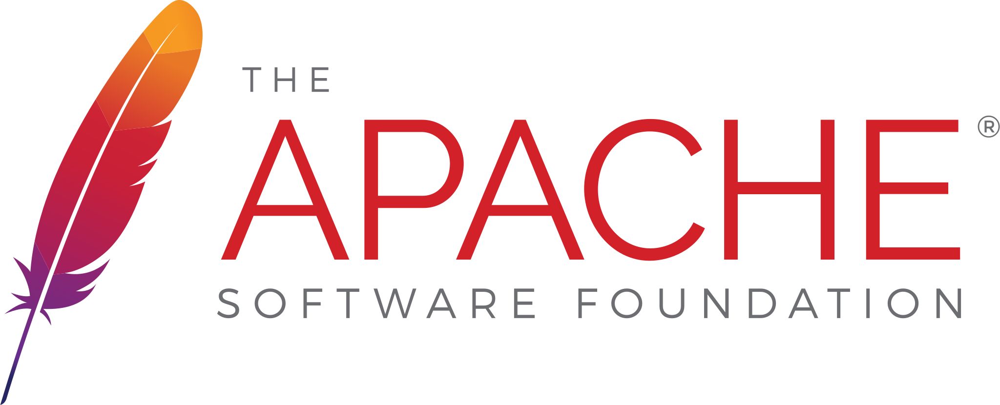
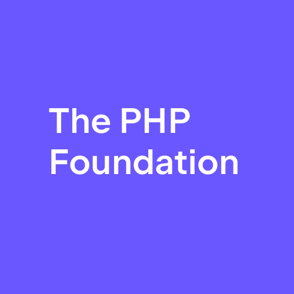
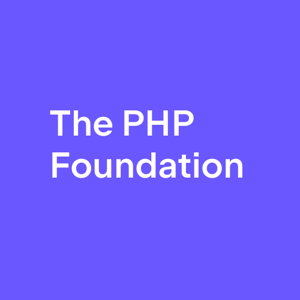

|  | |
| 1999 | 2000 |


|
 

|
|
1995
2012
|
1995
2021
|
„The bus factor is a measurement of the risk resulting from information and capabilities not being shared among team members, derived from the phrase «in case they get hit by a bus».”
„Maybe as few as two people would have to wake up this morning and decide they want to do something different with their lives in order for the PHP project to lack the expertise and resources to move it forward in its current form, and at current pace.”

Dmitry Stogov |
Nikita Popov |
|
Joe Watkins |
Nikita Popov |
|
|
Roman Pronskiy |
Stefan Priebsch |

Sebastian Bergmann |
|
We support, advance, |
„The PHP Foundation is a collective of people and organizations relying on the PHP language. Its mission is to ensure the long-term prosperity of the PHP language.”
„The PHP Foundation focuses on providing financial support and guidance to PHP language developers to support its goals of improving the language for its users, providing high-quality maintenance, and improving the PHP language project to retain current contributors and to integrate new contributors.”
„The PHP Foundation aims to promote the public image of the PHP language in the interest of retaining existing and gaining new users and contributors.”
„The primary task of the PHP Foundation is to fund developers to [...] further advance the development and maintenance of the language.”
„[T]he language decisions are the matter of the PHP Internals community.”
„Open Collective is [...] a fundraising + legal status + money management platform for [communities].”
| Total contributed: | $ 1,144,298.54 |
| Fees: | $ 142,696.86 |
| Total raised: | $ 1,001,601.68 |
| Total raised: | $ 1,001,601.68 |
| From organizations: | 78.3% |
| From individuals: | 21.6% |
| Total raised: | $ 1,001,601.68 |
| Recurring: | 49.7% |
| One-Time: | 50.3% |
| Total raised: | $ 1,001,601.68 |
| Paid to developers: | $ 314.349,62 |
| Other costs: | $ 32,32 |
| Current balance: | $ 687,219.74 |

George Peter Banyard |

Arnaud Le Blanc |
Máté Kocsis |

Derick Rethans |
Ilija Tovilo |
Jakub Zelenka |
|
Roman Pronskiy |
Joe Watkins |

Sara Golemon |
Nikita Popov |
Sebastian Bergmann |
|
Josepha Haden |
Benjamin Eberlei |
Nils Adermann |

Nicolas Grekas |
Matthew Weier O'Phinney |
|
Dmitry Stogov |

Rasmus Lerdorf |
|

Ayesh Karunaratne |
Tobias Nyholm |
Sergey Panteleev |
|
George Peter Banyard |
|
|
Arnaud Le Blanc |
|
|
Máté Kocsis |
|
|
Derick Rethans |
|
|
Ilija Tovilo |
|
|
Jakub Zelenka |
|
Further Reading & Listening
- https://blog.opencollective.com/php-foundation-alive-and-kicking
- https://blog.jetbrains.com/phpstorm/2021/11/the-php-foundation
- https://thephp.foundation/blog/2022/05/06/interview-with-core-developers
- https://thephp.foundation/blog/2022/11/22/transparency-and-impact-report-2022
- https://voicesoftheelephpant.com/2021/12/17/interview-with-the-php-foundation
| https://thephp.foundation | |
| sebastian@thephp.cc | |
| @sebastian@phpc.social |
Image Credits
- Fortune, February 2004, 149(3):40-X
- https://commons.wikimedia.org/wiki/File:ASF_Logo.svg
- https://commons.wikimedia.org/wiki/File:Linux_Foundation_logo_2013.svg
- https://mysql.com/
- https://mariadb.org/
- https://openmoji.org/library/emoji-1F68C
- https://commons.wikimedia.org/wiki/File:Webysther_20160423_-_Elephpant.svg